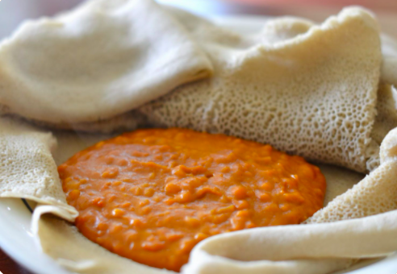

Shiro

The dish
You would only be here if you have had Ethiopian food, so I'll get right to it. This spiced chick pea wot (stew) is a staple of Ethiopian cusine. You should first get your hands on some Shiro powder, which may open the door for many versions of the dish.
Ingredients
- _ cups of Oil
- _cups of Water
If you have had thiopian food
- 1 Large red onion
- 4 Garlic cloves
- One tomato
- Shiro Powder
- Salt
- Jalapeno pepper
- Injera
- Kibe (Ethiopian Butter) - optional
Steps to cook
- Heat oil in a medium pot
- Dice Onion and Garlic
- Add diced onion to heated oil
- Cook onions until they become translucent
- While onions are cooking puree tomato
- Add tomato and water
- Stir in Shiro powder
- Add Garlic and (optional) Butter
- Let simmer for 40 minutes with minimal stirring
- Spoon onto injera and top with diced jalpenos
- Enjoy!